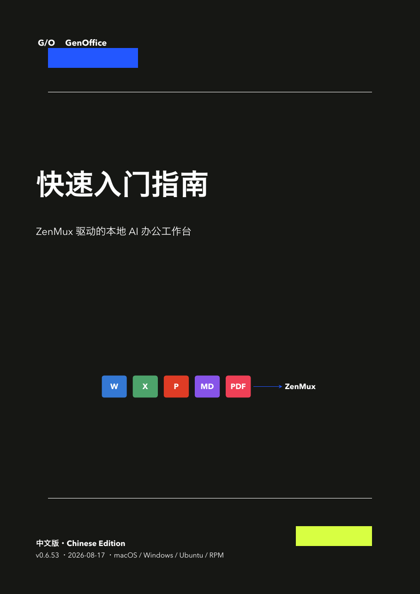

macOS DMG
适用于 Apple Silicon Mac。Developer ID 签名并已完成 Apple 公证，Gatekeeper 验证通过。
下载 macOS v0.6.63 ↓一款独立的 macOS、Windows 与 Linux 办公应用。API Key 只保存在本机；文本生成与 PPT、Word 配图统一通过 ZenMux 调用。
适用于 Apple Silicon Mac。Developer ID 签名并已完成 Apple 公证，Gatekeeper 验证通过。
下载 macOS v0.6.63 ↓适用于 Windows 10/11 x64。暂未 Authenticode 签名，SmartScreen 可能提示“未知发布者”。
下载 Windows v0.6.63 ↓适用于 Fedora、RHEL、Rocky Linux、AlmaLinux 与 openSUSE。包含 Linux 原生 xlsx 数据引擎。
下载 Linux RPM v0.6.63 ↓在 Ubuntu 22.04 LTS 原生构建，适用于 Ubuntu 22.04 与 24.04。包含 Linux 原生 xlsx 数据引擎，可通过 apt 安装依赖。
下载 Ubuntu v0.6.63 ↓
基于 v0.6.63 当前源码和真实运行态重制。用可编辑公式识别、真实 DOI 与 GB/T 7714 引用、3
委员 + 1 主席审稿、中文图表和 EDA 完整展示核心工作流；v0.6.63
新增微信公众号富文本排版、 Pretty Mermaid / 编辑级图表工作室，以及可配置的
OpenAI-compatible Base URL。已有 Markdown、AI 回复、粘贴与
@Connect 回填共用同一套 Markdown 规范化，并让编辑器与 AI 回复统一使用
KaTeX（含化学公式）渲染；列表中的多行公式、转义粗体和异常空格均可可靠恢复。
新版还可在设置中通过微信官方 ClawBot 流程扫码绑定，把移动端文字与当前 AI
回复按三天窗口写入本机 Markdown 日记；绑定凭据由系统加密保存。 Word、Excel、Markdown
与 PDF 的历史 AI 回复也重新提供 @Connect。通用设置与 AI 审稿继续共享 19
种语言，并让通用语言成为全模块 AI
默认回复语言；用户明确使用另一种语言提问时，回复自动跟随。此前已恢复全模块提问/回复复制，
并按文件在本机保存 AI 历史，再次打开同一路径的文档即可恢复最近 200
条消息。此前修复安装版拖放或打开 Excel 后白屏的问题，并同步加固 Word/PPT
的文件加载桥接；SQL 工作台改为明亮界面，新增 ZenMux AI 多行自然语言查询、最多 5
个附件、文件拖放、剪贴板图片缩略图、真实 Schema 读取、只读验证与 AI SQL
一键插入。手册还包含工作簿 SQL 数据库、Schema/键/索引、结果回填、全模块文件拖放与旧版
DOC 转换说明，并附两份可下载的实测 XLSX 样例。
ZenMux API Key 在设置页加密遮罩显示，并永久保存在当前设备。
在一个应用中处理 Word、Excel、PowerPoint、PDF 与 Markdown。
PPT 默认生成 16:9 横图，Word 默认生成 3:2 配图，并可自定义图像模型。
Word、PPT、Excel、Markdown 支持 LaTeX、多行公式及截图识别；Markdown 同时兼容 $...$、$$...$$、\(...\) 与 \[...\] 定界符，并自动渲染为可编辑公式。
Word、Markdown 与 PDF 均可启动 3 名委员与 1 名主席，联合审阅正文、公式、表格、图片、图表和图形；审稿语言与通用设置共享完整的 19 种语言列表。
Word、Excel、PPT、Markdown 与 PDF 的 AI 回复均可本地发送到另一个 Word、Excel、PPT 或 Markdown 标签，并保持内容可编辑。
选中文字后可直接提问、精确改写，或在选区前后插入可编辑的 AI 内容；发送时固定锚点，并阻止过期选区误写。
Word、Excel、PPT 与 Markdown 的 AI 回复统一使用 KaTeX；行内公式可完整解析 \cos、\times、\mathrm、\circ 等 LaTeX 命令，并通过 mhchem 渲染化学式与反应方程；同时支持独立、多行公式，以及列表、粗体和表格中的公式。
“幻灯片放映”和“插入”选项卡均可直接开始录制；macOS 将麦克风与 GenOffice 演示文稿内播放的媒体声音混合，Windows 还支持系统声音；支持暂停、继续和本地 MP4 导出。视频在编辑预览和放映中按插入位置与尺寸播放，并保持原始宽高比。
视频、音频可直接拖到 PPT 指定位置；图片可拖入 PPT、Word 与 Markdown，插入后仍可移动、缩放和编辑。
支持嵌入、四周、紧密、穿越、上下、衬于文字下方及浮于文字上方；图片可移动、等比缩放并使用位置预设，保存为原生 DOCX 布局。
通过 ZenMux 的 openai/gpt-image-2 保真去除空白处或覆盖在印刷字、公式、表格和图形上的手写痕迹；只依据邻近笔画保守修复被遮挡的印刷内容，也可在不删除手写内容的前提下增强黑白扫描件。提供处理前后预览，确认后才替换原图。AI 结果需人工核对并可能受网络影响。
水印文字支持从剪贴板粘贴并替换当前选区；多行内容自动折叠为单行。可调整颜色、角度、不透明度与字号，点击确定后在保存时真正嵌入全部 PDF 页面，而非仅作屏幕预览。
支持页面提取、插入、旋转、重排和删除，支持批注、表单、签名、印章、页眉页脚及页码；可打开需要密码的 PDF，并另存为不覆盖原文件的 AES-128 密码保护副本。
选择文字后可从功能区修改字体、字号、粗体与斜体，并优先沿用原字体、颜色、背景和布局。遇到子集字体或本机缺少原字体时，自动查找系统等效字体，或嵌入随应用提供的 Noto / Liberation 子集；覆盖简体中文、繁体中文、日文、韩文与拉丁文字，保存后可在其他 PDF 应用中继续查看。
PDF 下方 ZenMux AI 现与 Word、Excel 和 Markdown 一致：每次最多添加 5 个本地文件，支持文件选择、拖放和剪贴板图片粘贴；图片显示为可删除缩略图，并作为视觉输入发送，普通文件在本机解析后供 AI 按需读取。
用鼠标在任意 PDF 页面拖出矩形区域，将截图作为 ZenMux 的首要视觉上下文；发送前可查看或删除缩略图，按 Esc 取消，网络失败重试时仍保留原框选内容。AI 回复还可通过 @Connect 送往 Word、Excel、PPT 或 Markdown。
将整个工作簿作为本地数据库、每张工作表作为数据表；可配置字段名、类型、单列或复合主键及次键，使用带语法高亮和错误行定位的 SQL 控制台执行 JOIN、分组与日期分析，可运行选中语句、光标所在语句或完整脚本，并把结果回填为新工作表。AI 使用更宽敞的多行输入区，可读取真实表结构、生成和修复 SQL，且只允许受控只读查询；同时支持最多 5 个附件、文件选择与拖放、剪贴板图片缩略图、附件移除和网络失败重试。
Word、Excel、PPT、Markdown 与 PDF 的成功 AI 问答自动沉淀为当前设备上的个人知识库，保留来源文件、项目、会话、时间与主题。后续提问会检索中英文相关记忆并优先当前文件和项目；设置页可分别关闭自动收录或回复引用、调整引用条数、搜索、单条删除或全部清空。完整知识库不会上传，只有本次命中的有限片段会随当前 ZenMux 请求发送，并明确标记为可能过时的参考资料而非指令。
macOS 与 Windows 安装版在启动后及每隔 4 小时检查本项目 GitHub Releases 的最新稳定版本，发现新版本后在应用内提示下载并重启安装。macOS 使用 Developer ID 签名、公证的 ZIP 更新包，Windows 使用对应 NSIS 安装程序；Ubuntu DEB 与 Linux RPM 继续通过 apt、dnf 或 GitHub 下载页升级。
Markdown 可选择主题与版面密度，实时预览后复制带内联样式的 HTML 与纯文本备用内容；直接粘贴到微信公众号编辑器，标题、引用、表格、代码、图片与公式版式尽量保持一致。
图表工作室提供 6 类常用起始模板、15 套主题和克制的出版级图表模式；可通过当前 AI 网关生成或修改，结果始终保留为可编辑、可再次渲染的标准 Mermaid 源码。
ZenMux
https://zenmux.ai/api/v1 仍是默认通道；高级用户也可在设置中保存其他
OpenAI-compatible Base URL。API Key 继续仅在本机持久保存并于界面遮罩显示。
在设置页通过微信 8.0.70+ 官方 ClawBot 流程扫码绑定；应用运行时，微信文字会按三天窗口写入本机 Markdown 日记，凌晨 4 点前归入前一天。可让当前 ZenMux / OpenAI-compatible AI 回复并写进同一篇，也可用「记：…」「撤回」「结束」「帮助」控制。绑定凭据由系统加密保存，网络请求仅允许微信官方 HTTPS 主机。
普通 AI 办公产品往往止步于生成一段可复制的文本。GenOffice 把模型接入本地文档引擎、学术工具链与跨编辑器通路，让结果能够落回真实对象，同时保留用户对文件、模型和成本的控制。
侧边栏不知道真正的段落、单元格、公式或幻灯片对象；复制粘贴容易丢失样式与位置。
AI 可针对 Word 段落、Excel 单元格与公式、PPT Shape/Layout 对象树执行结构化修改；尽量只改变目标对象，保留未触碰的样式、布局和文件结构。
仅靠模型记忆容易产生虚构 DOI；复杂公式常停留在未渲染代码，审稿也只有单一视角。
连接 OpenAlex、Crossref、arXiv 与 PubMed，插入 GB/T 7714 等规范引文并导出 BibTeX；截图公式转为可编辑 LaTeX/OMML；3 名独立委员与 1 名主席对方法、统计、公式和证据链做交叉压力测试。
简单公式能够生成，但复杂多表关联、字段约束和可复用查询缺少统一工作台。
每张工作表可映射为数据表，定义字段、类型、单列或复合主键及次键；专业 SQL 工作台支持 JOIN、分组、只读安全验证，并可把结果一键回填为新工作表。
文档清理、问答和编辑分散在不同应用；重新打开文件后，很难延续上一次的上下文。
扫描件增强与手写痕迹清理可在文档内完成；文件拖放即开，AI 问答按本地文件路径保存，再次打开同一文件即可继续此前的思路与约束。
用户难以选择模型与成本结构，也不容易判断哪些数据被保存或如何迁移。
Office 解析、编辑、文件历史与加密 API Key 保存在本机；ZenMux 提供可配置模型路由和按量使用选择。只有用户主动提交给 AI 的提示词、附件或选定上下文会通过网络发送，项目代码全面开源可审计。
普通产品像是给旧马车绑上喷气发动机；GenOffice 从文档对象、Agent 协作到本地数据主权，重新设计整条生产力链路。
本项目是 genspark-ai/genoffice ↗ 的衍生版本，遵循原项目 Apache-2.0 许可证。我们保留其 Office 编辑器基础，并在此之上完成以下适配与增强。
Word、Excel、PowerPoint、Markdown 与 PDF 的对话、写回、公式识别和配图统一走 ZenMux，不依赖 Genspark 登录。
API Key 经系统凭据服务加密后永久保存在本机；设置页支持遮罩显示、预置模型及自定义模型。
新增选区上下文、附件、联网核查、AI 审稿委员会、翻译、LaTeX、公式图片识别，以及 AI Mermaid 生成与修改；Markdown 选区支持问答、精确回填和前后锚点插入。
加强可编辑 PPT、Markdown 与 Word 转换、Excel 分析和可视化、艺术字与绘图形状；五类 AI 入口均可复制提问和回复，并按文件恢复本地历史。
重新构建 macOS 与 Windows 安装包；macOS 使用 Developer ID 签名并完成 Apple 公证，同时维护 GitHub Release 与下载页。
AI 适配与修改由复旦大学计算与智能创新学院徐志平完成，并持续同步安全修复与跨平台发布。
通过微信官方 ClawBot 绑定，将移动端文字按三天窗口沉淀为本机 Markdown；可选用设置中的当前 AI 回复，凭据由系统加密且仅连接微信官方 HTTPS 主机。
相较上游原版，本衍生版本的优势集中在可自主配置、跨编辑器一致性、专业内容处理和开箱即用的桌面发行；基础 Office 编辑能力仍承袭上游项目。
用户直接使用自己的 ZenMux API Key，可选择预置或自定义模型，服务入口和模型选择更自主。
Word、Excel、PPT、Markdown、PDF 共享附件、剪贴板、联网搜索、消息复制和按文件历史等 AI 工作流。
覆盖多标准审稿委员会、中英文报告、公式和图表审阅、LaTeX/OCR、Mermaid，以及可信来源事实核查。
强化 Excel 分析和中文可视化、PPT 可编辑对象、Markdown/Word 转换、艺术字与更多基础绘图形状。
API Key 使用操作系统凭据服务加密保存并在界面遮罩；AI 历史按文档路径保存在本机， 不会随源码或安装包上传 GitHub。
提供独立 macOS DMG 与 Windows 安装程序、版本化下载页及 GitHub Release；macOS 包经过 Developer ID 签名和 Apple 公证。
GenOffice 不是聊天框套壳。它直接打开并编辑真实的 DOCX、XLSX、PPTX、PDF 与 Markdown 文件，并可将旧版 DOC 安全转换为独立 DOCX 副本；AI 能读取当前文件、选区和附件，通过 @Connect 还可把回复发送到另一个 已打开的编辑器，形成跨文件信息通路。
所有文档、表格、演示、Markdown、公式识别和配图 AI 都统一通过 ZenMux；不再依赖 Genspark 云端账号。
“✓”代表当前应用中可以直接使用；“专用”代表该应用拥有针对文件格式优化的独立实现。
| 能力 | Word | Excel | PPT | Markdown |
|---|---|---|---|---|
| 打开并保存真实格式 | ✓ DOCX | ✓ XLSX | ✓ PPTX | ✓ MD |
| 选择内容作为 AI 上下文 | ✓ | ✓ | ✓ | ✓ |
| @Connect 跨编辑器发送可编辑 AI 回复 | ✓ 富文本 | ✓ 单元格 | ✓ 文本框 | ✓ Markdown |
| LaTeX / 多行公式 | ✓ | ✓ | ✓ | ✓ |
| 图片公式 OCR | ✓ | ✓ | ✓ | ✓ |
| 图片与文件附件（最多 5 个） | ✓ | ✓ | ✓ | ✓ |
| 互联网搜索与事实核查 | ✓ | ✓ | ✓ | ✓ |
| 严格 AI 审稿委员会 | ✓ 专用 | 数据审查 | 内容审查 | ✓ 专用 |
| 科研文献查询、导入与引用 | ✓ 专用 | — | ✓ 专用 | ✓ 专用 |
| AI 配图 | ✓ 3:2 | 图表 | ✓ 16:9 | ✓ 图片 |
| 可编辑图表与可视化 | ✓ | ✓ 9 类 | ✓ | ✓ Mermaid |
| 版本快照与回退 | ✓ | ✓ | ✓ | ✓ |
ZenMux API Key 永久保存在当前设备，设置页遮罩显示；可添加和保存自定义模型名称。
macOS Apple Silicon DMG 已 Developer ID 签名并完成 Apple 公证；Windows 10/11 提供独立安装程序。
通用设置提供与 Word、Markdown、PDF 审稿一致的 19 种语言；所选语言是所有编辑器的 AI 默认回复语言，若用户明确用另一种语言发问则自动跟随问题语言。
Apache-2.0 开源，可在 GitHub 查看源代码、版本记录、安装包和更新说明。